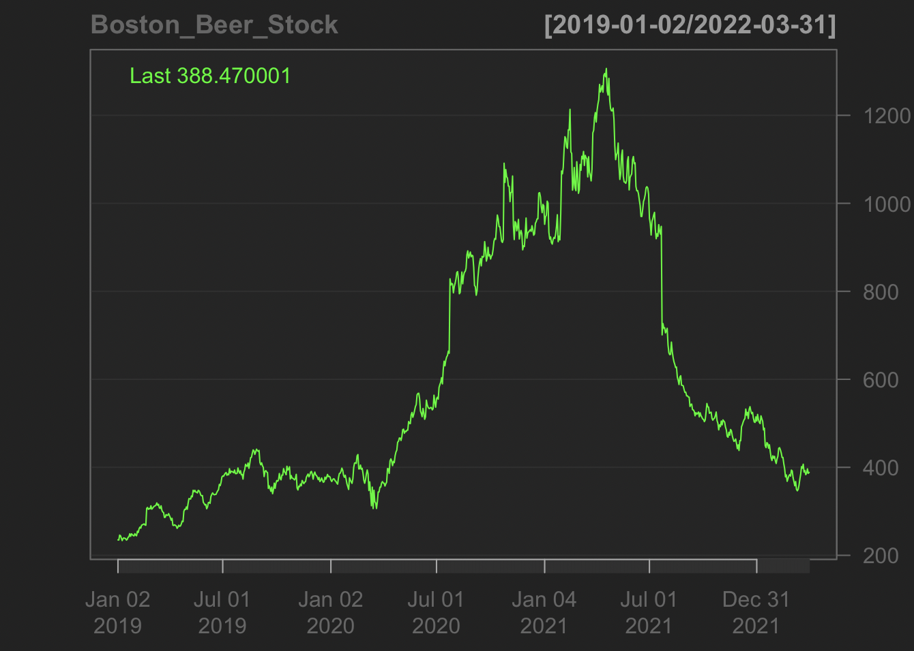

This page will fit our data with Keras on Python.
The models contain: simpleRNN, LSTM and GRU.
For each model, this page provides the normal model and another model with dropout regularizations.
Since the data is collected 5 days per week, the model set lookback = 5 to predict the future data with the past 5 days.
Otherwise, the step and delay are both set to 1 to use every sampling day to predict one data in the future.
We will use the adjusted close price of boston beer company SAM as our dataset.

For all models, we set epoch equal to 60 to see the performance.
The SimpleRNN shows a great performance. Both validation loss and training loss are close to 0 at the end.
For the second plot, it shows our predictions are very close to the true value in the test set.
The dropout rate is 5%(0.05).
Compare to the simpleRNN, the model with dropout shows clear higher losses.
On the other hand, there is some difference exist between the prediction and true value. Our model may overfit by using dropout regularization.
Similar to simpleRNN. The LSTM shows low validation/training loss.
For the prediction, it is similar to the true value but worse than the simpleRNN. The line does not match up on some turning points.
The dropout rate is 5%(0.05).
With the dropout regularization, predictions for our dataset do not change much.
However, the validation loss shows a rapid decrease before epoch = 10.
Same with LSTM itself, the losses are close to 0 at the end.
In the GRU model, the model performance seems not as good as the previous two. The validation loss is not close to or equal to 0 at the end. However, it is still a low value.
The prediction looks great with consistency to the true value in the dataset.
The dropout rate is 5%(0.05).
The GRU model gets a good validation/training loss value with dropout regularization.
However, similar the SimpleRNN, the dropout may result in overfitting.
The predictions have some difference with true value while using dropout regularization
By comparison to other models like SARIMA and benchmarks methods, the MAE bar graph is shown below.
The RNN model has a higher mean absolute error compared to the ARIMA model and drift method. However, it may have a better prediction by checking the previous work.
By using dropout regularization in deep learning. We may get a model with a lower validation/training loss. However, we need to take care of overfitting.